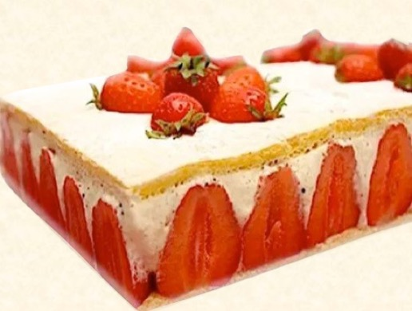

Привет
Я тут что-то делаю))
Мама, я в телевизоре
MEEM
MEEM
MEEM
MEEM
MEEM
MEEM

- Other Git for Windows downloads
- Standalone Installer
- 32-bit Git for Windows Setup.
- 64-bit Git for Windows Setup.
- Portable ("thumbdrive edition")
- 32-bit Git for Windows Portable.
- 64-bit Git for Windows Portable.
- Other Git for Windows downloads
- Standalone Installer
- 32-bit Git for Windows Setup.
- 64-bit Git for Windows Setup.
- Portable ("thumbdrive edition")
- 32-bit Git for Windows Portable.
- 64-bit Git for Windows Portable.

FRAISIER MINUTE AU MASCARPONE : LA RECETTE FACILE
Le fraisier est une pâtisserie à base de fraises, de génoise, de crème, recouverte parfois d’une mince couche de
pâte d’amande ou d’un sirop de fraises.
Ses origines ne sont pas connues.
| Niveau de difficulté : facile |
| Temps de préparation : 30 min |
| Temps de repos : – |
| Temps de cuisson : 15 min |
| Temps total : 45 min |
| Ingrédients : 6 personnes |
| 250 g de fraises |
| 100 g de sucre en poudre |
| 100 g de farine |
| 190 g de mascarpone |
| 350 ml de crème fleurette entière |
| 4 œufs de grosse taille |
| 100 g de sucre glace |
Préparation :
- Dans un bol, fouetter les jaunes d’œufs avec le sucre durant 5 min jusqu’à l’obtention d’un mélange clair et
mousseux.
- Ajouter la farine en pluie tout en fouettant.
- Dans un autre bol, monter les blancs en neige ferme et incorporer délicatement à la spatule au mélange
précédent en effectuant des mouvements lents de bas en haut.
- Préchauffer le four en mode statique à 180°C.
- Verser la pâte à génoise sur une plaque de cuisson munie de papier sulfurisé et enfourner durant 12 à 15
min. Sortir et mettre de côté.
- Découper 2 rectangles de génoise aux dimensions du cadre à pâtisserie.
- Poser le premier rectangle de génoise dans le cadre.
- Dans un bol, monter la crème en chantilly en ajoutant petit à petit le sucre glace.
- Incorporer délicatement le mascarpone légèrement détendu au préalable.
- Laver, rincer et équeuter les fraises.
- Couper une partie des fraises en tranches et garnir le pourtour du cadre. Couper le restant de fraises en
deux.
- Remplir un sac à douille de crème au mascarpone à la chantilly et en garnir le rectangle de génoise.
- Enfoncer les morceaux de fraises dans la crème.
- Terminer en posant le second rectangle de génoise.
- Presser légèrement et mettre au réfrigérateur 3 h minimum.
- Saupoudrer avec le restant de sucre glace avant de servir.
- Déguster !
Citation sur la cuisine :
« C’est une histoire d’amour la cuisine, il faut tomber amoureux des produits et puis des gens qui les font. »
-Alain Ducasse